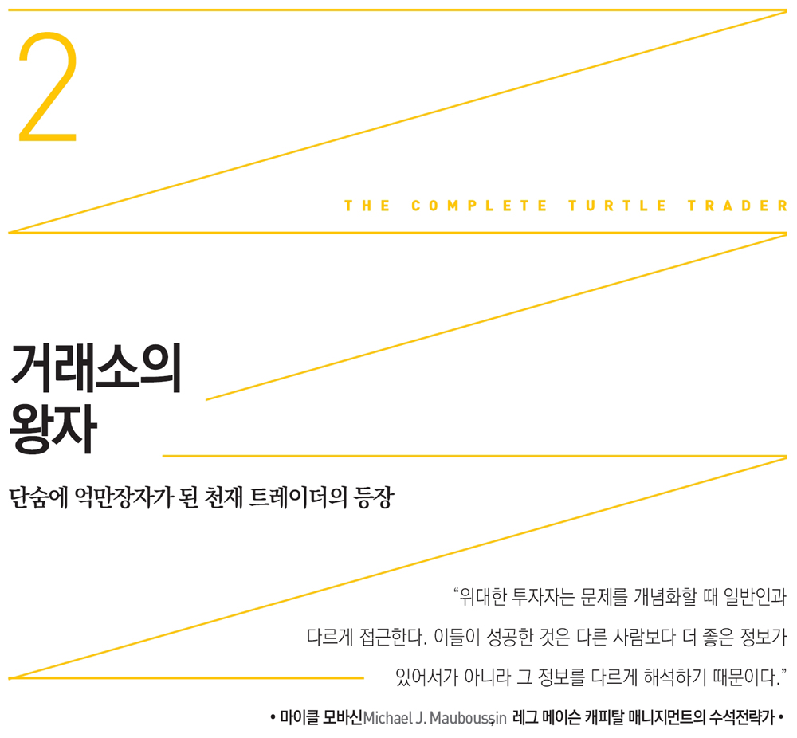
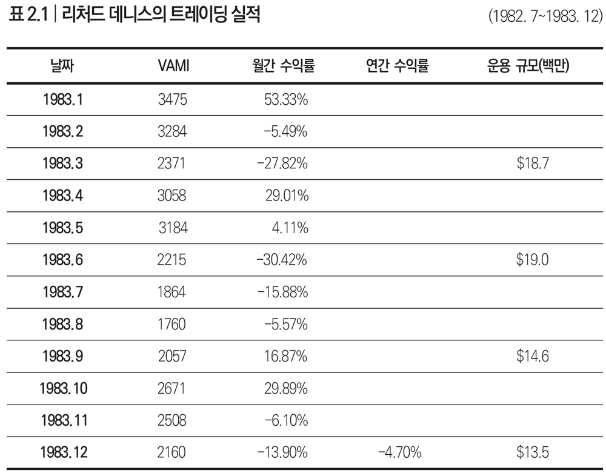

1986년은 리처드 데니스에게 최고의 해였다. 그해 8,000만 달러나 벌었기 때문이다(2007년 가치로 따지면 1억 4,700만 달러다). 이쯤이면 월가 최고 스타로 같은 해 1억 달러를 번 조지 소로스와 8,000만 달러의 수익을 낸 정크본드의 왕, 드렉셀 번햄 램버트Drexel Burnham Lambert의 마이클 밀켄Michael Milken과 어깨를 견줄 만하다.
하지만 리처드 데니스처럼 엄청난 수익을 올리려면 쓰라린 고통도 견뎌야 한다. 그는 하루에 1,000만 달러의 손실을 기록했다가 회복한 적도 있었다. 이런 급등락이라면 보통 사람들은 한숨도 못 잤으리라. 하지만 리처드 데니스는 그런 엄청난 변동성에도 아기처럼 곤히 잤다고 호기롭게 말했다.
그가 돈을 버는 스타일은 여러 번 삼진을 당한 뒤 초대형 홈런을 날리는 식이었다. ‘비결’이 있다면 손실을 심리적으로도 견디고 생리적으로도 감내할 수 있어야 함을 알았다는 것이다. 왕년의 프로 트레이더가 ‘손실’ 앞에서 초연했다고는 하지만 1986년은 한참 전이고 기억도 가물가물하다.
리처드 데니스가 한창 이름을 날리던 1970년대와 1980년대 그리고 1990년대 중반 그와 알고 지낸 사람들은 그를 다양하게 묘사했다. 거래소의 전설적 트레이더라고 말하는 사람도 있었고 트레이딩의 대가라고 평가한 지인도 있었다. 투자은행인 드렉셀 번햄과 함께 펀드를 출시했다고 아는 사람이 있는가 하면 박애주의자라고 보는 이도 있었다. 적극적인 정치 활동가나 업계 최고 펀드매니저라고 말하는 사람도 있었다.
하지만 그를 ‘도박사’라고 폄하하는 것에는 유일하게 거부감을 드러냈다. 그는 스스로를 라스베이거스 스타일의 도박사라 여긴 적이 결코 없기 때문이다. 그는 확률을 잘 계산하는 등 금융 다위니즘을 아주 잘 이해하고 있었다. 더불어 다른 모든 사람들이 그를 이기려 한다고 여기고 ’게임‘에 임했다. 금융 선물의 개척자 리처드 샌더Richard Sander는 그를 다음과 같이 평가했다. “시장이 혼돈 속에 있을 때 가장 중요한 것은 바로 생존이다. 이런 점에서 그는 20세기 가장 뛰어난 투자자라 평가받을 만하다.”
리처드 데니스는 터틀 실험을 시작하기 훨씬 전부터 성공의 길을 걷기 시작했다. 그는 1950년대 칙칙한 시카고 사우스사이드 거리에서 놀며 자랐다. 부모님이 부자도 아니었고 든든한 배경의 친구가 있는 것도 아니었다. 한마디로 금수저도 아니었고 이렇다 할 연줄도 없었다.
내성적이었던 십대 시절 리처드 데니스는 두꺼운 안경을 끼고 폴리에스테르 바지를 입고 다녔다. 남학생만 있는 시카고 성로렌스프리스쿨에 다닐 때 3달러짜리 ‘축음기’ 회사 주식을 사는 것으로 처음 매매를 시작했다. 그렇지만 이 회사는 도산하고 말았다. 이렇게 첫 투자는 실패로 끝났지만 그는 직관으로 승률을 파악하는 등 타고난 포커꾼이었다.
리처드 데니스를 가르쳤던 스승들은 그에 대해 또렷이 기억하고 있었다. 그에게 신학과 유럽 역사를 가르친 제임스 셔먼James Sherman은 그가 무엇이든 액면 그대로 보는 법이 없었다고 말했다. 리처드 데니스와 친구들은 서로 편을 갈라 논쟁을 벌이는 것을 즐겼다. 제임스 셔먼이 덧붙였다. “당시 누군가가 리처드 데니스가 상품 선물 매매로 엄청난 부자가 될 것이라고 말했다면 저는 그 말을 믿지 않았을 겁니다.” 어떤 스승은 그가 벽난로 앞에서 스웨터 차림으로 파이프 담배를 빨며 우주에 대해 강의하며 살리라 예상했다고 말했다.
리처드 데니스는 열일곱 살에 시카고상업거래소에서 시급 1.6달러짜리 사환 일을 하며 여름을 보냈다. 거래소 플로어는 앞다투어 주문을 내느라 아우성치는 수백 명의 트레이더로 날마다 북적였다. 거래가 트레이딩 플로어에서 이루어진다는 점 말고는 물건을 사고파는 분위기는 경매장과 똑같았다. 태클이 난무하는 미식축구를 실내에서 한다고 보면 정확한 묘사일 듯하다.
리처드 데니스는 직접 트레이딩하기를 원했지만 플로어에서 매매하려면 스물한 살이 넘어야 했다. 그는 아버지에게 부탁해 자기 대신 플로어에서 트레이딩하도록 하여 이 난관을 넘었다. 시카고 시청 소속 블루칼라 노동자였던 아버지는 아들이 보내는 수신호에 따라 트레이딩을 하는 대리인이 되었다.
리처드 데니스는 십대에 트레이딩으로 돈을 꽤 벌었지만 드폴대학에 들어가 (회계학에서 낙제한 뒤) 고교 때부터 지녔던 철학에 대한 열정을 다시 불살랐다. 그는 세상을 비교적 단순하게 바라보는 영국 철학자 데이비드 흄David Hume과 존 로크John Locke에 심취했다. “내게 증명해 보이시오.” 라는 주장이 이들의 기본 시각이었다.
데이비드 흄은 마음을 ‘백지 상태tabula rasa’로 비유하고 그곳을 경험으로 채워야 한다고 주장했다. 그는 인간은 세상 속에서 활동하고 살아가기 때문에 사람들이 어떻게 하는지 잘 관찰해야 한다고 했다. 인간 신념의 근원을 밝히는 것이 핵심 원리였다.
데이비드 흄과 존 로크는 경험주의 학파에 속한다. 경험주의는 지식이 실험, 관찰, 경험에서 나온다는 생각에 뿌리를 두고 있다. 18세기의 이 두 영국 철학자의 작고 간단한 상식 덩이들이 감수성 예민한 한 대학생을 사로잡았다. 이들은 그의 우상이 되었다.
리처드 데니스는 다음과 같이 주장하며 자신이 믿는 철학을 당당히 밝혔다. “저는 머리부터 발끝까지 경험주의자입니다. 데이비드 흄과 버트런드 러셀Bertrand Russell 등이 제시한 영국 철학을 굳게 믿고 따릅니다.” 리처드 데니스는 데이비드 흄이 심한 회의론자라고 생각했다. 데이비드 흄은 동세대에 신성불가침으로 여기던 것들에 대항했고 리처드 데니스는 그의 이런 반항적 모습을 사랑했다.
리처드 데니스를 회의주의자로 만든 것은 영국 철학만이 아니었다. 1960년대 후반과 1970년대 초반에 자라다 보니 반체제적 세계관이 자연스레 형성되었다. 그는 1968년 폭동 당시 숭엄한 시카고상품거래소 바로 옆에서 시위자들이 시카고 경찰에 의해 두들겨 맞는 모습을 직접 목격한 적이 있다. 이 사건이 전환점이 되었다.
“트레이딩을 하면서 통념을 그대로 받아들이면 안 된다는 점을 배웠지요. 제가 트레이딩으로 돈을 벌었다는 것은 다수 의견이 옳지 않다는 증거입니다. 대다수는 십중팔구 틀립니다. 시장은 때때로 미친 군중처럼 비합리적이라는 것을 알게 되었습니다. 일반 대중의 경우 잔뜩 긴장하면 대개 잘못된 방향으로 갑니다.”
리처드 데니스는 드폴대학을 졸업한 후 튤랑대학으로부터 입학 장학금 제의를 받았으나 이를 바로 거절하고 며칠 뒤 시카고 거래소로 돌아와 전업 트레이딩을 시작했다. 그는 부모님으로부터 빌린 돈으로(일부는 자신 명의로 된 보험증권으로 마련했다) 미드아메리칸 상품거래소 회원권을 구입했다. 하지만 매매를 위해서는 현금이 더 필요했다. 초기 투자자금 100달러는 형제인 톰이 피자 배달로 마련한 것이었다.
가족 모두가 트레이딩에 매달리지는 않았다. 리처드 데니스는 아버지가 시장을 ‘혐오’했다고 솔직히 밝혔다. “할아버지가 대공황 때 주식에 투자했다가 전 재산을 날렸어요. 투자에 대한 욕구가 한 세대 건너뛰어 나타났죠.” 리처드 데니스는 아버지의 생각이 자신에게 결코 도움이 되지 못함을 잘 알고 있었다.
“돈에 대해 어떤 판단기준을 정해놓으면 트레이딩을 잘할 수가 없어요. 무슨 뜻일까요? 예컨대, 아버지는 30년간 시카고 시청에서 근무했는데 삽으로 석탄 캐는 일을 한 적이 있습니다. 시카고 거래소에서 단 몇 초만에 50달러를 잃었다고 하면 아버지가 이를 어떻게 받아들일지 상상해보세요. 이는 석탄 채굴 작업을 여덟 시간 더해야 한다는 뜻입니다. 이것이 돈에 대한 아버지의 판단기준이었어요.”
리처드 데니스의 아버지는 얼마 지나지 않아 아들이 트레이딩으로 돈을 버는 능력이 탁월하다는 사실을 알아챘다. 리처드 데니스는 스물네 살이 되던 1973년 초까지 10만 달러를 벌었다. 그 무렵 그는 시카고 신문에 다음과 같이 당당히 주장했다. “아침에 일어나 이렇게 말할 수 있으면 좋겠습니다. ‘1년에 10만 달러를 벌었군. 하지만 아직 멀었어.’ 이 말이 유익한 자극일지 아닐지 모르겠지만 저는 이런 생각이 저를 이끄는 원동력의 일부라 생각합니다.”
뼛속까지 반골이었던 리처드 데니스는 처음부터 괴짜 기질을 보였다. 리처드 닉슨 대통령과 자기 생일이 같다는 게 아주 못마땅하다고 대놓고 말하고 다녔다. 이는 라살 스트리트 거래소의 보수주의 동료들에게 날린 조용한 공격이기도 했다. 청바지를 즐겨 입은 그는 기성세대를 지렛대 삼아 백만장자가 된 반체제 인사였다.
리처드 데니스가 처음으로 큰돈을 벌 무렵 사회는 갈라져있었다. 1974년은 트레이딩에 집중하기 어려운 해였다. 고든 리디Gorden Liddy가 워터게이트 사건으로 유죄판결을 받고 심비오니스 해방군이 패트리시아 허스트Patricia Hearst를 납치하는 등 혼란이 끊이지 않은 격동의 시기였다. 더구나 리처드 닉슨 대통령은 역사상 최초로 임기 도중 사임했다.
사회가 시끄러웠는데도 리처드 데니스는 1974년 대두 가격이 급등하는 동안 레버리지를 이용해 50만 달러를 벌었다. 그해 말 스물다섯의 나이로 그는 백만장자가 되었다.
리처드 데니스는 성격도 유별났지만 트레이딩 능력도 남달랐다. 그는 침착함을 유지하고 트레이딩을 할 때 과도한 직관에 빠질 위험을 경계하고 점검하기 위해 경제지표나 작황과는 무관한 〈사이콜로지 투데이Psychology Today〉를 읽었다. 일일 기상 보고서와 이에 대한 농무부의 평가 등 농산물 거래에 필요한 온갖 정보를 읽기 위해 일찍 일어나는 대부분의 트레이더와 달리 그는 늦잠을 자다가 거래소 개장 직전에야 출근하는 것을 자랑스럽게 여겼다.
그 무렵 그는 은행에 예금하러 갔을 때 기자와 인터뷰를 한 적이 있다. 그때 예치하려던 금액은 32만 5,000달러였다(1976년 당시 그가 2주면 버는 액수였다). 1970년대 중반에 이 정도 예치금은 일반적인 수준이 아니었다. 그래서 그 금액의 수표를 입금할 때마다 그는 실랑이를 벌여야 했다.
리처드 데니스의 유명세가 퍼져나가면서 〈시카고 트리뷴Chicago Tribune〉, 〈뉴욕 타임스New York Times〉, 〈배런스〉 같은 전국지가 젊은 나이에 성공한 그의 스토리를 대서특필했다. 평소 입이 무거운 시카고 거래소의 거물 트레이더들 사이에서는 흔치 않은 일이었다.
리처드 데니스는 이를 즐겼고 심지어 자신의 성장 배경과 그 과정에서 지니게 된 독특한 신념을 대놓고 말하고 다녔다.
“저는 시카고 사우스사이드 아일랜드계 가톨릭 집안에서 자랐습니다. 제 가치관은 혼란스러워 보일 수도 있지만 아주 확고합니다. 가톨릭 성당, 민주당, 시카고 화이트삭스가 삼위일체가 되어 저의 가치관을 만들었습니다. 어린 시절의 가치체계가 제게 일정 부분 영향을 주었습니다. 아버지가 저를 헐리스 태번에 데리고 갔을 때 술 취한 사람들이 의자에서 떨어지는 걸 봤습니다. 위스키를 마시며 ‘아일랜드 팝송’을 부르는 사람들에게서 나타나는 광경이었죠.”
성당, 야구, 민주당, 아일랜드풍 음주문화가 그의 유년 시절에만 영향을 끼친 것은 아니었다.
“이 삼위일체는 이제 어른인 제게 얼마나 영향을 주고 있을까요? 화이트삭스는 지속적으로 깊이 신뢰하고 있습니다. 보상이 전혀 따르지 않는 민주당에 대한 믿음은 강하지 않고 심지어 사라지고 있습니다. 아마 성당에 대해서는…… 16년 동안 받은 가톨릭 교육의 영향으로 제가 회의론자로 남아있는 것 같습니다.”
스물여섯의 백만장자가, 왼쪽에 아버지가 앉아있는데도 사진기자는 안중에도 없는 듯 소파에 늘어져있는 1976년 〈뉴욕 타임스〉 사진을 보라. 카메라를 바라보는 눈이 얼마나 반체제적인지 쉽게 알 수 있을 것이다. 사진에 붙은 설명도 그의 특이함만 부각시켰다. “리처드 데니스는 값싼 구닥다리 차를 몰고 다니고 싸구려 니트를 입는다. 돈을 쓰지 않고 쌓아놓기만 한다.”
젊은 나이에 각종 언론에 오르내리자 예상치 않은 일들이 벌어졌다. 돈을 달라며 손을 내미는 사람들이 나타났다. 그는 이렇게 회상했다. “대부분 아주 딱한 사람들이었습니다. 어떤 사람은 이렇게 말했습니다. ‘트레이딩하는 법을 배우고 싶으니 좀 도와주세요. 빚이 있거든요.’ 5,000달러나 1만 달러만 있으면 아주 행복할 것처럼 말하는 사람들도 있었어요. 이런 편지들만 답장할 만한 가치가 있었습니다. 그들에게는 돈이 있다고 해서 별로 달라질 게 없다고 설명해주었습니다.”
스물여섯의 젊은이들 가운데 이와 같은 서민적 금언을 활용해가며 언론을 다룰 수 있을 만큼 성숙한 사람은 많지 않을 것이다. 그렇지만 주변의 소용돌이가 자신의 돈벌이를 방해하도록 그냥 두지는 않았다. 그의 매매기법은 계절적 가격 차이를 이용하는 방식으로 아주 간단했다. 다시 말해 대두처럼 계절적 특성이 있는 시장을 활용하는 것이 그의 초창기 특기였다. 리처드 데니스는 동일한 시장이나 관련 선물시장에서 가격이 오르면 수익이 나는 롱 계약과 시장이 하락하면 돈을 버는 쇼트 계약을 동시에 매수했다.
미드아메리칸거래소에서 쌓은 경험
리처드 데니스는 미드아메리칸거래소(이전에는 시카고 오픈 보드Chicago Open Board라 불렸다) 회원권을 얻자마자 바로 투자를 시작했다. 처음에는 어떻게 해야 할지 몰랐지만 카지노 운영자처럼 생각하는 법을 익힐 만큼 빨리 배워나갔다.
“처음 시작할 때 제게는 ‘전혀 모름’이라는 시스템이 있었습니다. 4년 동안 그저 에지edge만 챙겼죠. 누군가 제게 25센트 에지를 주며 귀리 계약 하나를 사라고 하면, 저는 그도 제대로 알지 못한다고 여겼습니다. 저는 그저 25센트 에지를 받는다는 사실만 생각했습니다. 결국에는 에지가 제 수입의 대부분이 되겠죠. 분명, 개별 건으로는 그렇지 않을 수도 있지만 길게 보면 그렇게 됩니다. 저는 카지노 하우스처럼 되려고 노력했습니다. 이는 새롭지 않았습니다. 상품거래소 사람들은 늘 그렇게 해왔으니까요. 하지만, 미드아메리칸거래소에서는 이런 발상이 혁명적이었습니다. 당시에는 거래량을 늘려서 위험을 적절한 수준으로 맞출 수 있다는 사실을 이해하는 사람이 없었기 때문입니다. 저는 이렇게 시작했습니다.”
리처드 데니스는 미드아메리칸거래소에서 전례 없이 빠르게 치고 나갔다. 어떻게 그런 전략을 그렇게 빨리 습득했는지는 수수께끼다. 그는 트레이더들에게 자멸하는 경향이 있음을 알고 자신과의 싸움에 힘을 쏟았다. “밀턴 프리드먼Milton Friedman의 적자지출에 대한 논평보다 프로이트의 자살충동 개념을 아는 것이 훨씬 더 중요하다고 생각합니다.”
트레이딩은 리처드 데니스가 밝힌 것보다 더 어려웠다. 초기에는 급등락으로 타격이 컸지만 따끔한 맛을 본 뒤 몇 달 안에 교훈을 터득했다. “실패 과정을 정신적으로 극복해야 합니다.” 그가 털어놓았다. “현대인들이 저지를 수 있는 실수를 모두 저지른 날도 있습니다. 너무 크게 베팅했죠. 공포에 질려 가격이 바닥을 찍을 때마다 팔았습니다. 그때까지 번 돈이 대략 4,000달러였는데 개장 직후 단 두 시간만에 1,000달러를 날린 적도 있었습니다. 이런 쓰라린 아픔을 극복하는 데 대략 사흘이 걸렸는데, 그동안 겪어보지 못했던 가장 값진 경험이었습니다.”
동료 트레이더 톰 윌리스Tom Willis와 로버트 모스Robert Moss가 리처드 데니스를 만난 시점은 1972~1973년 즈음이었다. 이들은 리처드 데니스를 따르는 막역한 친구이자 트레이딩 동료로서 여러 해 동안 함께 출근했다. 이 친구들도 리처드와 마찬가지로 아르마니 같은 고급스러운 옷을 입고 다니지 않았다. 구레나룻을 넓게 기르고 머리는 다듬지도 않은 채 중고차 세일즈맨들이나 입고 다닐 법한 재킷을 걸치고 다녔다. 겉모습만 봐서는 이들이 일주일 내내 경쟁자들을 압도하는 수익을 올리려고 위험을 철저히 따져 투자하는 프로임을 전혀 알 수 없었다.
리처드 데니스와 마찬가지로 톰 윌리스도 노동자 집안에서 자랐다. 우유 배달원을 거쳐 빵 배달 일을 하던 그의 아버지는 톰이 스물한 살이 되었을 때 1,000달러를 들여 미드아메리칸거래소 회원권을 사주었다. 그는 〈시카고 트리뷴〉에 실린 ‘이타적인 곡물 트레이더의 성공’이라는 표지기사를 보기 전까지는 거래소가 무엇인지 전혀 알지 못했다. 이 기사에 나온 트레이더는 스물두 살 반 즈음의 리처드 데니스였다.
톰 윌리스는 반체제적 세계관을 가진 그에게 바로 동질감을 느꼈다. 리처드 데니스는 유진 맥카시Eugene McCarthy를 지지한다고 거리낌 없이 말하고 다녔고, 자신이 급진적이라고 해서 꼭 택시운전사가 되어야 한다고 생각하지도 않았다. 몇 년 뒤 그는 더욱더 거침없이 자신의 생각을 피력했다. “시장은 생계를 위한 합법적이고 도덕적인 수단입니다. 트레이더라고 해서 꼭 보수적일 필요는 없습니다.”
하지만 톰 윌리스의 눈길을 처음 사로잡은 것은 그의 정치적 성향이 아니었다. 늘 계급과 차별이 진입을 가로막는 세계에서 돈을 버는 것에 대한 그의 태도였다. 톰 윌리스는 더 생각할 것도 없이 바로 차에 올라타 시카고 시내 한가운데 있는 피셔 빌딩으로 향했다. 처음으로 미드아메리칸거래소에 갔을 때 곧 자신의 롤 모델이 될 리처드 데니스가 눈에 확 들어왔다. “리치가 거래소 피트에 있었습니다. 〈시카고 트리뷴〉에서 본 사진 때문에 그를 알아볼 수 있었죠.”
톰 윌리스가 미드아메리칸거래소에서 트레이딩을 시작하면서, 자신과 함께 가장 젊은 축에 속하는 리처드 데니스와 친하게 지낼 법 했지만 둘이 바로 가까워진 것은 아니었다. 구닥다리 의자에 침 뱉는 그릇까지 있는 이곳의 트레이더들은 대부분 나이가 예순다섯에서 여든에 이르렀다. 의자에 느긋이 앉아있는 이들을 내려다보고 있는 젊은 리처드 데니스의 모습은 눈에 띌 수밖에 없었다.
시카고상품거래소에서 몇 블록 떨어진 곳에 자리한 미드아메리칸거래소는 당시 2부 리그 수준인 거래소로 겨우 40평 남짓할 정도로 작았다. 톰 윌리스는 이 거래소에서 첫발을 뗀 후 삶이 어떻게 전개될지 몰랐지만(결국 30년 넘게 트레이딩에 몸담았다) 리처드 데니스는 훨씬 더 큰 미래를 보고 있을 것이라고 확신했다.
그때에도 시카고상품거래소의 중요 인물들이 리처드 데니스로부터 투자 아이디어를 얻으려고 리무진을 타고 미드아메리칸거래소로 왔다. 리처드는 톰 윌리스가 파산하지 않을 정도로 트레이딩도 꽤 잘하고 나이도 자기와 비슷해 먼저 톰에게 다가가 가깝게 지냈다.
그는 톰 윌리스에게 이런 팁도 줬다. “밀을 산 뒤 5포인트 상승하고 반대로 대두는 너무 많이 하락하면, 매수했던 밀을 매도하는 대신 대두를 파는 게 어때?” 이는 아주 통찰력 있는 전략이었다. 사실 요즘에도 가격이 ‘오를’ 때 사고 ‘내릴’ 때 판다면 투자자들은 어리둥절해할 것이다. 저가에 매수해서 고가에 매도하는 방법과는 정반대이기 때문이다.
천생 선생 스타일인 리처드 데니스는 다른 트레이더들에게 자신의 지식을 이미 전수하고 있었다. 그는 자기나 톰 윌리스의 아파트에서 거래소의 젊은 회원들을 가르쳤다. 그때마다 톰 윌리스는 치킨 200조각과 감자 샐러드를 한 보따리씩 사들고 갔다. 리처드 데니스가 매매기법에 대해 강의하는 방 한 칸짜리 아파트에는 50~60명이 들어찼다.
수강생이 이렇게 많았던 데에는 이유가 있었다. 미드아메리칸거래소는 온갖 부류의 트레이더들에게 신규 회원권을 팔고 있었는데 이들 가운데에는 매매경험이 전혀 없는 사람들도 많았기 때문이다. 리처드 데니스와 톰 윌리스는 특히 ‘유동성’을 강조해 가르쳤다. 미드아메리칸거래소가 시장의 신뢰를 얻어 살아남기 위해서는 매수자와 매도자 수가 일정 수준을 넘어야 했다. 이 교육으로 양질의 트레이더도 많아지고 거래소 사정도 나아졌다. 그리고 이런 트레이더들이 돈을 벌기 시작했다. 이 모든 결과는 거슬러 올라가면 리처드 데니스 덕분이었다.
크레이그Craig와 게리 라크로스Gary Lacrosse, 이라 샤이먼Ira Shyman, 존 그레이스John Grace, 웨인 엘리엇Wayne Elliott, 로버트 탤리언Robert Tallian, 데이비드 웨어David Ware 등은 리처드 데니스로부터 배운 시카고 트레이더 출신이다. 이들은 누구나 알 정도로 잘 알려지지는 않았지만 트레이딩으로 엄청난 돈을 벌었다. 이들의 성공은, 자신의 재능을 남들과 아낌없이 나눈 리처드 데니스의 너그러움 덕도 있었다.
아파트에서 진행된 교육이 끝나면 각자 집으로 돌아갔지만 이들은 다음날 거래소 피트에서 다시 만났다. 장중에 이들은 리처드 데니스에게 다가가 묻곤 했다. “이것이 어제 말한 내용이죠?” 그가 답해주었다. “맞아요.” 리처드 데니스는 지식을 아무런 대가 없이 나눠줬다.
시카고상품거래소
리처드 데니스는 마이너리그라 할 수 있는 미드아메리칸거래소에서 멋진 경험도 하고 돈도 많이 벌었지만 더 큰 시장이 필요했다. 그는 이전부터 세계 최대 선물시장인 시카고상품거래소Chicago Board of Trade의 큰손들과 겨뤄 이겨보려는 계획을 구상하고 있었다. 시카고상품거래소에서 매매를 시작한 그는 차분한 스타일로, 플로어에서 거친 몸동작과 고성으로 매매신호를 보내는 다른 트레이더들과 대조를 이루었다. 이들 중에는 경력이 수십 년인 백만장자 트레이더도 많았다. 리처드 데니스는 트레이딩 카드가 손에서 미끄러져 바닥에 떨어질 정도로 아주 느긋이 매매하기도 했지만 자신만의 ‘베팅’ 스타일로 얼마 지나지 않아 경쟁자들을 압도하기 시작했다.
리처드 데니스가 시카고상품거래소로 옮긴 것은 역사적 사건이었다. 톰 윌리스는 믿을 수 없다는 듯 말했다. “리처드 데니스는 시카고상품거래소로 옮기더니만 엄청난 홈런을 날렸습니다. 그곳 사람들은 처음 보는 일이었죠. 이 젊은 친구가 피트 전체를 휘어잡았습니다. 으스대거나 과시를 원해서가 아니었습니다. 옥수수 선물 가격이 상승하고 대두가 2포인트 오른 뒤 옥수수가 3포인트 떨어지면 리처드 데니스는 다른 트레이더들로부터 대두를 1.5포인트나 올려 100만 부셸을 사들입니다. 그런데 장이 마감될 때에는 대두가 7포인트나 상승해있습니다. 대두를 매도했던 사람들이 수군거립니다. “저 친구 뭐지?” 톰 윌리스는 리처드 데니스가 시카고상품거래소에 첫발을 내디뎠을 때 혼쭐을 내준 고참 트레이더들 이름을 밝히기를 꺼렸다. 이들 중에는 오늘날까지도 현업에 있는 트레이더들이 많기 때문이다.
리처드 데니스로부터 배운 사람들은, 그가 자신의 신체 조건을 성공 배경의 하나로 믿는다고들 한다. “스승님이 왜 그렇게 엄청나게 성공할 수 있었는지 들어본 적이 있습니까? 키는 180센티미터가 넘고 몸집은 기차만 했습니다. 사람들을 내려다볼 수 있었고, 더욱 중요한 것은 트레이더들이 그분을 어디서든 볼 수 있었다는 겁니다. 늘 눈에 띄었다는 얘기죠. 스승님은 솔직히 그것이 자신이 성공한 이유라고 여기고 계십니다.”
리처드 데니스의 키와 몸무게가 그의 성공 요인을 모두 설명하지는 못한다. 스물다섯에 백만장자가 된 데에는 180센티미터가 넘는 키와 135킬로그램이 넘는 몸무게 말고 다른 이유가 더 있었다. 동료들은 그가 몸무게는 엄청났지만 플로어에서 매매할 때에는 고양이처럼 재빠르게 대응했다고 밝혔다.
피트를 떠나다
당시 거래소 피트에서 하는 매매는 생동감이 넘쳤지만 오늘날의 시카고상품거래소 안은 조용하다. 그렇다고 해서 거래가 죽었다는 뜻은 아니다. 오히려 그 반대다. 전자거래가 상상할 수 없을 정도로 빠르게 옛날 방식을 대체하고 있다.
1970년대 트레이딩 플로어는 매우 역동적이었지만 더욱 크게 성공하기 위해서 리처드 데니스는 거래소를 떠나야만 했다. 시카고 거래소에는 각기 다른 상품을 거래하는 피트가 여럿 있었다. 여러 상품을 매매하려면 플로어를 지나쳐 이 피트에서 저 피트로 분주히 옮겨다녀야 했다.
리처드 데니스는 피트를 떠나면서 강세에 사고 약세에 파는 전략을 더욱 잘 활용할 수 있게 되었다. 기존 전략이 대두와 옥수수 시장에서 잘 작동한다면 금과 주식시장, 그리고 다른 모든 시장에서도 통한다고 보았다.
동시에 세계 경제가 더욱 개방되고 확장되면서 새로운 시장이 정신이 없을 정도로 빠르게 열리면서 월가도 진화하고 있었다. 채권 선물시장이 열리고 1975년에는 외환을 주식처럼 매매할 수 있는 국제통화시장International Monetary Market도 개설되어 누구든 거래할 수 있었다. 리처드 데니스는 이 모든 변화가 무엇을 뜻하는지 알고 있었다.
그는 더욱더 큰 세상에서 거래하기 위해 아수라장 같은 트레이딩 피트를 뒤로하고 시카고상품거래소 건물 23층으로 사무실을 옮겼다. 1975년 11월 그는 이사를 하는 동시에 래리 캐롤Larry Carroll과 파트너십 회사를 차렸다. 단순하게 두 사람의 성을 딴 C&D 커머더티스가 탄생한 것이다.
둘은 미드아메리칸거래소에서 만났지만 래리 캐롤에 대해서는 공개된 정보가 거의 없다. 데니스라는 성의 첫 글자인 D가 사명의 뒤에 있었지만 이 파트너십은 의사결정과 이익 배분을 동등하게 하지는 않았다. 대장은 늘 리처드 데니스였다. 얼마 지나지 않아 C&D 커머더티스는 세계 최대 독립 트레이딩 회사 반열에 올라섰다. 곧 살로먼 브라더스Salomon Brothers와 필스버리 컴퍼니Pillsbury Company 같은 대형 회사들과도 어깨를 견주게 되었다.
하지만 피트를 장악하던 그가 플로어를 떠나자 함께 일했던 거래소 트레이더들은 깜짝 놀랐다. 플로어를 떠나는 것은 미치지 않고서는 내릴 수 없는 결정이라 여겼다. 밖에서는 플로어의 ‘에지edge’를 유지할 수 없기 때문에 필스버리 컴퍼니나 살로먼 브라더스를 상대로 싸우는 것은 자살 행위나 다름없어 보였다. 리처드 데니스 자신도 피트가 가장 안전한 장소라고 늘 강조했었다.
그는 사무실을 옮긴 뒤 거의 침몰할 뻔했다. 플로어를 벗어나자 어려움을 겪었다. 1970년대 말 시장은 그를 괴롭혔다. 톰 윌리스는 리처드가 분투하는 모습을 이렇게 회상했다. “그는 조금 환멸을 느꼈습니다. 솔직히 약간은 평점심도 잃었죠.” 둘은 술집에서 대책을 논의했다. 항복할 마음이 없던 리처드 데니스는 톰 윌리스를 보며 말했다. “이봐, 1년에 5,000만 달러를 벌 수 있는 좋은 방법이 떠올랐어.”
현재로 치면 1년에 2억 달러를 벌 수 있는 트레이딩 기법이 생각났다고 말하는 것이나 다름없었다. 정상적인 방법으로 벌 수 있는 돈의 50배가 넘는 숫자였다. 다른 사람들도 그랬겠지만 톰 윌리스도 입이 쩍 벌어졌다. “그를 몰랐다면 이렇게 말했을 겁니다. ‘상태가 생각보다 심각하군. 제정신이 아니야.’ 1979년에 5,000만 달러를 벌겠다니 미쳤다고 생각할 수밖에 없지만 저는 이 말을 믿었습니다. 그리고 그는 이를 실제로 해냈습니다. 기대수익이나 아이디어가 좋으면 바로 스크린 앞으로 가서 실행에 옮겼죠. 실제로 결과가 괜찮으면 스크린으로 가서 20명이 똑같이 거래하도록 했습니다. 사실 이는 훌륭한 아이디어를 활용해 수익을 기하급수적으로 증가시키는 데 매우 안정적인 방법이었습니다.”
거래할 수 있는 모든 시장에서 매매해 돈을 더 많이 벌겠다는 그의 목표는 1년 안에 계획대로 달성되었다. 수익을 훨씬 더 많이 올렸지만 변한 것은 하나도 없었다. 새 사무실은 대리석도 통유리도 없었다. 바깥 복도는 거무칙칙한 갈색이었다. “C&D 커머더티스, 리처드 J. 데니스 앤 컴퍼니”라고 쓰인 회사 간판은 전등식 표지판도 아니었다. 사무실 바로 옆에는 남자 화장실이 붙어있었다.
래리 캐롤의 조카인 마틴 헤어Martin Hare는 고등학교를 다니던 열여섯에 리처드 데니스 사무실에서 일하기 시작했다. 현재 샌디에이고 메릴린치의 임원으로 있는 그는 1982년부터 1989년까지 리처드 데니스의 평범하지 않았던 사무실에서 일했다. 마틴 헤어는 당시의 방과후 일자리를 떠올릴 때면 여전히 생생한 듯 말했다. “3년 동안 여름방학 때마다 그의 사무실에서 결제 가격을 정리하는 일을 도왔습니다. 주급은 120달러였는데 90달러였다가 오른 것이었죠. 사무실은 감청색이었습니다. 낮잠을 잘 수 있는 방이 하나 있었는데 주로 리처드 데니스가 이용했고 냉장고에는 늘 고급 맥주가 가득했습니다.”
리처드 데니스는 트레이딩 플로어에서는 사라졌지만 은둔고수처럼 트레이딩 마법을 부리며 제우스처럼 시장 위를 활공했다. 피트로 엄청난 주문이 들어오면 리처드 데니스의 거래임을 모두가 알아차렸다. 사람들은 그에게 맞서서는 안 된다는 사실도 잘 알았다. 그렇지 않으면 순식간에 쓸려가 버릴 수도 있기 때문이다. 일부 비판자와 감독당국은 그가 너무 많이 거래해 시장을 불공정하게 좌지우지한다고 생각하기도 했다. 하지만 리처드 데니스는 코웃음 쳤다. “생트집을 잡는군.”
이런 비판은 돈을 잃은 사람들을 위한 변명에 불과했다. 리처드 데니스는 자신의 성공을 헐뜯는 말은 참지 않았다. “제가 백만장자로 알려져 조금은 민망하기도 합니다.” 그가 민주당 주지사인 아들라이 스티븐슨Adlai Stevenson에게 기부한 25만 달러가 일리노이 역사상 가장 큰 정치헌금이었다는 기사를 읽고 이렇게 말했다. “10만 달러를 가지고 있는 사람을 십만장자라고 부르지는 않습니다. 어느 극빈자가 1달러를 기부한다고 해서 ‘마지막 지폐 한 장’을 기부했다고 말하지도 않습니다.”
리처드 데니스는 날마다 재산이 불었지만 사무실에는 여전히 반핵 포스터가 걸려있었고 거래소의 서로 어울리는 분위기와도 떨어져 있었다. 그는 주목받는 것을 즐기지 않았다. “그와 접촉이 많지 않습니다.” 거래소의 어느 트레이더가 한 말이다.
리처드 데니스의 동료들은 고급 빈티지 자동차와 맨션을 사 모았지만, 그는 주로 유행이 지난 폴리에스테르 바지를 자꾸 불어나는 허리 위로 추켜 입고 다녔다. 시끄러운 식당으로 싸구려 햄버거를 먹으러 나가는 것이 운동의 전부였다. 리처드는 넥타이를 매지 않고 반팔 티셔츠를 입은 채 야구연감에 나오는 기이한 기록에 열성적으로 매달리는 모습으로 가장 흔히 목격되었다. 결국 그는 화이트삭스 야구팀 지분을 일부 인수했다. 야구팀을 소유하게 되자 경영진에게 빌 제임스 스타일의 《머니볼Money Ball》을 참조하면 좋겠다고 제안했지만 그들은 들은 척도 하지 않았다.
그의 제자 중 한 명인 마이클 섀넌Michael Shannon은 리처드 데니스의 친구들이 그를 사우스사이드에 있는 원룸형 아파트에서 끌어내 말끔히 변신시키려 했던 적이 있다고 회상했다. “실제로 빌 에크하르트와 다른 친구들이 지위에 어울릴 만한 곳으로 그를 강제로 이사하도록 했습니다.”
리처드 데니스에게 돈은 게임 스코어나 다름없었다. 그는 공공연하게 말했다. “트레이딩은 야구 베팅과 비슷합니다. 평균 타율이 꼭 얼마가 되어야 한다고 생각하는 순간 타격에 집중할 수 없습니다. 돈은 트레이더에게 평균 타율과 같습니다.”
독특한 사고를 지닌 이 유명 야구팬은 시각적으로도 강한 이미지를 남겼다. 가까운 동료들은 리처드 데니스의 양말에 대해서도 지적했다. 그의 제자 한 명은 웃으며 이렇게 말하기도 했다. “신고 있는 양말 색이 같은지 잘 확인해봐.”
리처드 데니스의 첫 투자자로 알려진 육사 출신의 브래들리 로터Bradley Rotter는 그의 별스러움을 목격한 적이 있었다. “독립기념일을 맞아 그의 집에서 테니스 파티를 하고 있었습니다. 그런데 리처드는 내내 보이지 않다가 파티가 끝날 무렵 흰 테니스 셔츠와 반바지에 검정 양말과 신발을 신고 나타났죠. 그 모습을 결코 잊을 수 없습니다.”
브래들리 로터는 그를 조롱하는 것이 아니었다. 어느 시장에서도 추세추종 기법을 잘 활용하는 그를 존경했다. 야구에서 말은 쉽게 할 수 있지만 실제 타석에 들어서면 어쨌든 방망이를 움직여 공을 맞춰야 한다. 리처드 데니스는 있는 힘껏 휘둘렀다. 단타는 노리지 않았다. 베이브 루스Babe Ruth처럼 담장을 넘기는 홈런을 쳐내 떼돈을 노리는 스타일이었다.
리처드 데니스는 트레이딩에서는 베이브 루스 같았지만 일상생활에서는 기본적인 것도 챙기지 못했다. 개인 우편물과 청구서는 그가 전혀 신경을 쓰지 않아 회사 총무가 처리했다. 심지어 회사에서 집으로 화장지를 보내주기까지 했다. 골드코스트 콘도에 있는 역도 연습실은 사실상 방치 상태로 있었다. “가끔씩 역기를 만지작거리기는 합니다.” 리처드 데니스가 말했다.
다른 제자인 얼 키퍼Erle Keefer는 그의 기이함을 넘는 탁월한 트레이딩 실력을 다음과 같이 극찬했다. “리처드 데니스는 제가 만난 사람 중에서 가장 뛰어난 총잡이입니다. 엄청난 압박을 잘 견디며 돈을 꼭 붙들고 있다가 다른 사람들이 지쳤을 때 방아쇠를 당깁니다. 정말 대단하죠. 매매기법이 뛰어나다기보다 타고났다고 볼 수밖에요.” 그의 실력이 선천적인지 후천적인지는 논란의 대상이다. 바로 이 논쟁이 터틀 실험의 핵심이다.
정치적 야망
리처드 데니스의 성공은 결국 심각한 문제를 불러일으켰다. 1980년대 중반 비판자들을 그를 시장의 폭력배라 비난했다. 너무 커진 시장 변동성을 그의 탓으로 몰아세웠다. ‘결탁’ 같은 말도 떠돌았다. 리처드 데니스는 이렇게 일축했다. “한 트레이더의 변동성은 다른 사람에게 이익을 가져다줄 수 있습니다.”
1984년 리처드 데니스가 한 라디오쇼에 손님으로 초대되었을 때였다. 어떤 청취자가, 그가 아주 오랫동안 매매하면 결국 그동안 번 돈을 모두 토해내게 될 것이라고 장담했다.
그 청취자의 목소리에는 분노가 섞여있었다. 젊은 사람이 돈을 엄청나게 벌었다는 사실 자체를 달가워하지 않는 사람들이 있었다. 거래소에는 투기자도 있어야 한다는 점을 누구나 알지만 위험을 무릅쓰는 이런 투기자들이 돈을 버는 것을 싫어하는 사람들도 많다. 한번은 리처드 데니스가 ‘시장의 효율성(이 말이 정확히 무슨 뜻인지 모르겠지만)’에 관한 국회 청문회에 출석한 적이 있었다. 감독당국이 그의 매수매도 규모가 거래소가 정한 한도를 넘지 않았다고 결론을 내리자 그를 폄하하는 사람들은 침묵했다.
그는 곧 완전히 새로운 차원의 정치 싸움에 동참했다. 모범적인 정치인과 여러 사회적 약자에 특히 관대했던 그는 미국에서 민주당에 가장 많이 후원하는 사람 중 한 명이 되었다. 매 맞는 여성을 위한 쉼터나 마리화나 합법화 추진 단체 등 대중의 관심이 더욱 필요한 부분에 관심을 더 가졌다(해마다 수익의 10퍼센트를 기부했다). 그는 자칭 진보자유주의자였지만 극좌익 흑인단체에서 활동한 적이 있던 보비 러시Bobby Rush에게도 1,000달러를 기부했다.
리처드 데니스는 단순히 돈을 기부하는 데 그치지 않았다. 빌 브래들리Bill Bradley 상원의원과 친분을 유지했으며 대통령에 출마하는 월터 먼데일Walter Mondale(1984년 출마)과 브루스 배빗Bruce Babbitt(1988년 출마)을 적극 후원하기도 했다. 그는 자신의 정치적 이념에 대해 다음과 같이 정당화했다. “모두가 싫어하지만 본인은 옳다고 생각한다면 이는 꼭 해야 하는 일입니다. 왜냐하면 아무도 하지 않을 것이기 때문입니다.”
하지만 사회적 약자를 지지한다는 이념을 기반으로 성공적인 정치인이 되는 것은 큰돈을 버는 일만큼 쉽지 않았다. 단순한 자금 지원으로는 충분하지 않았다. 그래서 리처드는 그들과 함께 ‘행동’하고 장애물을 정면 돌파하기를 원했다.
하지만 정치는 승패가 확실한 제로섬 게임이 아니었다. 결국 그는 좌절했다. “어처구니없게도 정치인들은 주관도 없이 자기 선거구민들이 원하는 것만 좇습니다. 사람들은 고통스러운 진실을 외면하고 있고요.”
리처드 데니스는 워싱턴 정치인들의 사교댄스 모임에 초대되었을 때 자신의 의견을 거침없이 말해 상대방의 기분을 상하게 하기도 했다. 그는 연방준비제도 이사회 의장이었던 폴 볼커Paul Volcker도 한 차례 만났는데 폴 볼커는 리처드 데니스와 몇 마디 나누고는 “당신이 시카고에서 벌이는 카지노를 좋아하지 않아요.”라고 말했다고 한다.
리처드 데니스는 자기가 부자라서 멋대로 행동해도 사람들이 받아주고 뭔가 중요한 말을 할 때 귀기울여준다는 것을 잘 알고 있었다. 리처드는 1982년 워싱턴에 루스벨트 미정책연구소Roosevelt Center for American Policy Studies라는 싱크탱크를 신설했을 때부터 곤경에 처하기 시작했다.
워싱턴은 돈을 아무리 많이 가지고 있어도 상대하기 어려운 시장이었다. 이제 민주당도 그를 실망시키고 있었다. 그는 불만을 이렇게 토로했다. “모두를 부자로 만들면 가난한 사람도 부자가 된다는 사실을 진보주의자들조차 이해하지 못한다니, 정말 짜증스럽습니다. 가능성도 따져보지 않으니 정말 안타까울 뿐이죠.”
리처드 데니스가 시카고의 트레이딩 플로어에서 하는 방식이 의회 플로어에서는 통하지 않았다는 점이 문제였다. 미국 헌법 원본 6권 중 하나를 보유하고 있는 것(그는 이것을 실제로 가지고 있었다)과 현대 정치인들을 움직이는 것은 완전히 별개였다. 그는 더 이상 참을 수 없었다.
결국 그는 리버티 미디어 회장 존 맬런John C. Malone, 페덱스 대표이사 회장 프레데릭 스미스Frederick W. Smith 같은 거물들을 지원하는 자유주의 케이토 연구소Libertarian Cato Institute 이사회의 일원이 되었다. 아울러 다른 진보 연구단체인 리즌 파운데이션 이사회에도 합류했다.
리처드 데니스의 짧은 정치 여정은 결코 순탄하지 않았다. 그가 다른 사람들과 의견을 조율하려 하지 않았기 때문에 깡패나 다름없다고 비판하는 정치가들도 있었다.
마약 합법화 운동은 그가 행동으로 나선 전형적인 예였다. 그는 당시 ‘마약단속국장’이었던 빌 베네트Bill Bennet의 ‘단순한 금지’ 정책이 마약 폭력의 근본적 해결책이 아니라고 보았다. 리처드 데니스는, 자신에게 해롭더라도 남을 해치지만 않는다면 사람들이 원하는 것을 마음대로 할 수 있도록 놔둬야 한다고 주장했다.
“마약과의 전쟁은, 남에게 바라는 만큼 해주라는 황금률에 반합니다. 악과 유혹에서 자유로운 사람은 아무도 없습니다. 도덕적으로 모자라다고 해서 수감되는 것을 찬성하는 사람이 있을까요? 우리의 십대 아이가 마약을 소지한 죄로 체포된다고 하면(십대의 58퍼센트가 불법 마약에 손을 대기 때문에 이는 충분히 가능한 일이다) 젊은 호기심의 희생양이 된 이 아이를 정말 감옥에 보내야 할까요?”
리처드 데니스는 피트에서 다른 트레이더들로부터 엄청난 돈을 땄지만 이와 동시에 분명히 다른 사람들의 복지에 대해서도 걱정했다. 그는 모순덩어리였다.
거친 바다
1986년 리처드 데니스는 크나큰 성공을 맛보기 전 여러 어려움을 겪었다. 아마 정치적 열망 때문에 초점을 잃을 듯했다. 자기 돈 이외에 남의 자금까지 운용하게 되면서 책임이 더욱 무거워졌다. 고객 돈을 맡아 굴리는 일은 그의 장기가 아니었다. 그는 이렇게 고충을 토로했다. “남이 맡긴 자금을 운용하다 손실이 나면 훨씬 더 힘들었습니다. 쉽지 않았죠. 집에 가서도 걱정해야 했으니까요.”
고객들은 이런 변명을 듣고 싶어 하지 않았다. 1983년 수탁고가 2,500만 달러로 최고치에 이르렀을 때 고객 계좌 운용이 난기류에 빠졌다. 1월에 53퍼센트의 수익을 기록하는가 싶더니 2~3월에는 33퍼센트나 하락했다. 그러자 조지 소로스가 두 달 전 그에게 맡겼던 200만 달러를 바로 회수했다. 4~5월에 일부 손실을 만회했지만 다시 반토막이 났다. 15만 달러를 들여 구입한 1983년산 컴퓨터는 성난 고객들에게 별 위안을 주지 못했다.
원금이 회복되기까지 2년 넘게 걸린 고객들이 많았다. 투자자 대부분이 끝까지 붙어있지 않아 결국 1984년 몇몇 계좌를 청산할 수밖에 없었다. 손실 고객에게는 운용보수를 모두 돌려주었다. 고객 자금을 자신의 돈으로 하듯 공격적으로 운용하면 투자자들이 심리적으로 견디기 어렵다는 점을 리처드 데니스는 인정하지 않을 수 없었다.
리처드 데니스는 엄청난 수익률로 유명해졌고 그에게 돈을 맡긴 고객들도 그런 수익을 기대했다. 투자자들은 항해를 하다 보면 성난 파도를 만날 수도 있다는 사실을 잘 알고 있었지만 배가 크게 흔들리면 멀미가 난다는 사실은 쉽게 잊었다. 이들은 처음 만난 거친 파도에 손실을 보자 항해를 중단하고 리처드 데니스를 비난했다. 그는 이 경험을 통해 사람들이 비합리적 기대를 한다는 뼈아픈 교훈을 배웠다.
2005년, 그는 고객 자금을 운용하면서 겪었던 어려움을 이렇게 회상했다.

VAMI(Value Added Monthly Index): 투자원금 1,000달러가 매월 어떻게 달라지는지 나타내는 지수
출처: 바클레이즈 성과보고서(www.barclaysgrp.com)
“맡긴 돈에 손실이 발생해도 편하게 운용할 수 있도록 놔두는 고객이 거의 없다는 점이 문제입니다. 맡긴 기관이 누구든 중간에 늘 대리인이 있기 마련이죠. 고객 자금을 운용할 때 보통은 ‘손실을 크게 문제 삼지 않을’ 사람들의 비위를 맞추려 애씁니다. 하지만 최종 고객들에게 ‘당장은 손실이 크지만 훌륭한 성과를 얻기 위해 노력하고 있다’고 말할 수 있어야 합니다.”
그렇지만 1983년 리처드 데니스는 고객 돈을 맡아 운용하는 생쥐 경주에서 벗어날 필요가 있었다. 이론만 앞세우기보다 마리화나 합법화 운동에 더욱더 집중하거나, 참을성 없고 지식이 부족한 고객들에게 의존할 필요가 없는, 어떤 전반적인 전략을 구상하는 쪽으로 방향을 돌리고 싶었다.
여러 면에서 터틀 수련생 실험은 자신의 인생 2막을 여는 것임을 그는 알고 있었다. “여러분들은 제자들의 영광을 떠올리며 살고 싶지 않겠지만 저는 다릅니다. 상품 선물시장에서 터틀 수련생을 가르친 경험이 제 생애 최고의 일이라 생각합니다.”
하지만 그때만 해도 리처드는 그가 자부한 생애 최고의 일이 자신의 삶도 바꾸고 트레이딩의 역사를 상상할 수 없을 정도로 변화시켰다는 사실은 꿈에도 생각하지 못했다.
1983년 리처드 데니스는 영광과 전설을 말끔히 뒤로했다. 그에게 이제 가장 시급한 일은 구인광고에 응한 수천 명의 지원자 중에서 터틀 수련생을 뽑는 일이었다.